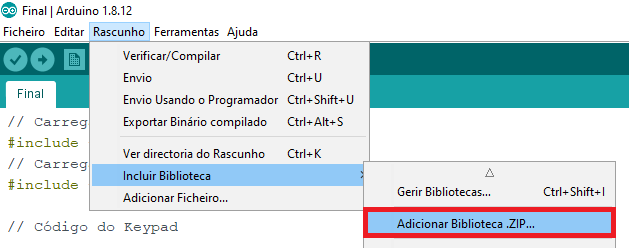

IOREF - Fornece uma tensão de referência para que shields possam selecionar o tipo de
interface apropriada, dessa forma shields que funcionam com a placas Arduino que são alimentadas com 3,3V podem se
adaptar para ser utilizados em 5V.
RESET - pino conectado a pino de RESET do microcontrolador. Pode ser utilizado para um
reset externo da placa Arduino.
3.3 V - Fornece tensão de 3,3V. para alimentação de shield e módulos externos. Corrente
máxima de 50 mA.
5 V - Fornece tensão de 5 V para alimentação de shields e circuitos externos.
GND - pinos de referência, terra.
VIN - pino para alimentar a placa através de shield ou bateria externa. Quando a placa
é alimentada através do conector Jack, a tensão da fonte estará nesse pino.
PWM - 3,5,6,9,10 e 11 podem ser usados como saídas PWM de 8 bits através da função
analogWrite().
Comunicação serial - 0 e 1 podem ser utilizados para comunicação serial. Deve-se
observar que estes pinos são ligados ao microcontrolador responsável pela comunicação USB com o PC.
Interrupção externa - 2 e 3 podem ser configurados para gera uma
interrupção externa, através da função attachInterrupt().
Código:
Ligações:
Configuração:
Primeiramente é necessário adicionar a biblioteca do keypad ao arduino, caso contrário o mesmo
não reconhecerá as funções do utilizadas pelo mesmo. O ficheiro da bilblioteca encontra-se em conjunto com o
código, disponível para download acima.

Vá até á localização onde extraiu o ficheiro e selecione a pasta "keypad"
Após isso, conecte o seu arduino, envie o código e já está. Certifique-se que selecionou a
porta correspondente ao arduino tal como a placa correta.
Demonstração:
Esp32 Cam
Esp32 Camera Pinout:
Existem três pinos GND e dois pinos para alimentação: 3,3V ou
5V.
GPIO 1 e GPIO 3 são pinos
seriais (TX e RX respetivamente) e são utilizados para dar upload ao código.
A melhor maneira de dar upload
ao código é através de um Conversor
FTDI.
O esp32-cam possui um led que pode servir como flash ao tirar fotografias. Esse led está
internamente conectado ao GPIO 4.
Código:
Para o código do esp32 foi utilizado o exemplo já existente no arduino IDE. Porém algumas
alterações são necessárias para o funcionamento do servidor web:
Comente o primeiro #define e descomente o último de forma a selecionar o modelo de câmera
correto que vai ser utilizado neste projeto.
Insira o nome (ssid) e a palavra passe do Wifi que está a utilizar.
O servidor web está protegido com uma palavra pass, que pode ser alterada (ou removida). Para
isso, selecione o separador "camera_index.h" e selecione tudo dentro do primeiro conjunto de { }.
Após isso, vá ao site CyberChef
para descriptografar o html do servidor web. As opções necessárias para descriptografar o código já estão
inseridas no link para o CyberChef, apenas copie o código e cole no input.
A seguir copie o código do Output e aceda a este link do CyberChef
para alterar e voltar a criptografar o código (a criptografia é necessária pois o arduino não lê linguagens web no
seu estado normal da forma que o exemplo foi criado).
A varíavel "pass1" é a responsável pelo armazenamento da palavra passe, e está codificada em
base64 para um maior nível de segurança. Elimine a palavra passe dentro dos " " e aceda ao website Base64 para codificação/descodificação.
Digite a palavra passe que desejar e clique em "Encode" para codificar a palavra passe em
base64. Copie o resultado da codificação e substitua no código do CyberChef. Após isso, copie o código do OUTPUT
(menos a primeira vírgula) e substitua pelo código existente no esp32.
Altere também o link do website em
"window.location" para o seu IP. Depois volte ao CyberChef e clique nos dois últimos sinais de proibido e copie o
valor da "length".
Substitua esse valor pelo existente no código do esp32 e já pode dar upload do código.
Configuração:
Antes de dar upload no código é necessário instalar a placa esp23 no arduino IDE. Para isso vá
a Ficheiro>Preferências
Após isso, insira o link "https://dl.espressif.com/dl/package_esp32_index.json" em "URL
Adicionais do Gestor de Placas" e pressione "OK".
Vá a Ferramentas e selecione a placa "AI Thinker ESP32-CAM".
Conecte o esp32-cam ao FTDI da seguinte maneira de forma a possibilitar o upload de dados:
Após clicar no botão de upload no arduino IDE, clique no botão de reset do esp32 quando
aparecer "Conecting".
Quando terminar o upload de dados, retire os fios utilizados para chanfrar o GND ao GPIO 0, vá ao monitor serial e pressione novamente o
botão
de rest do esp32. Aceda ao IP apresentado no monitor e o servidor web estará disponível para uso.
No-IP:
Para que o servidor web do esp32 cam possa ser acedido fora da rede local, foi utilizado o
website No-IP para criar um DNS dinâmico que se
conecta ao endereço IPV4 da rede local. O nome dado ao host foi "homesecuritycam" e está alojado no link http://homesecuritycam.ddns.net.
Abaixo está o vídeo que
mostra como criar um servidor virtual no router (algo que é necessário para que o No-IP tenha algo para
redirecionar) e como criar um host no site No-IP.